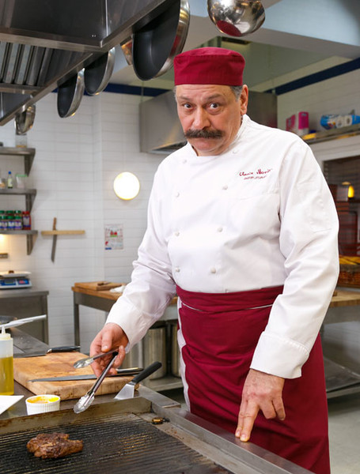

Назад
Сотрудники
Работники кухни:
- Шеф-повар. Основа его деятельности — это создание и поддержание общей концепции заведения, разработка меню и технологических карт, контроль готовых блюд и запасов на складе.
- Су-шеф. Правая рука и заместитель шефа.
- Команда поваров. Занимается приготовлением блюд в соответствии с технологическими картами.
- Помощник повара. Работает на заготовках.
- Посудомойщики. Не только моют посуду, но и выполняют множество других обязанностей по кухне.

Обслуживающий персонал:
- Администратор зала, метрдотель, хостес
- Официанты
- Бармен
- Бариста
- Кассир
- Уборщик
Административный персонал:
- Управляющий. Отвечает за работу ресторана в целом, контролирует все подразделения и финансовые показатели.
- Менеджер смены. Заместитель управляющего.
- Бухгалтер. Ведет учет доходов/расходов, работает с налоговой.
- Бухгалтер-калькулятор. Определяет необходимое количество продуктов, рассчитывает стоимость позиций меню.
- Менеджер по снабжению, закупщик. Приобретает продукты, полуфабрикаты и сырье.
Обязанности персонала ресторана
Каждый сотрудник заведения общественного питания выполняет множество функций и несет огромную ответственность как перед гостями, так и перед своими коллегами. Практически все крупные рестораны начинаются для посетителей с метрдотеля, который:
- встречает клиентов, оценивает их настроение и предпочитаемый вид отдыха, «передает» их официантам;
- контролирует и поддерживает состояние гостевого зала в наиболее подходящем для приема гостей виде (интерьер, оборудование, мебель, утварь, посуда и т. д.);
- контролирует работу официантов и барменов;
- следит за качеством сервиса;
- контролирует расчет посетителей с официантами;
- решает любые возникающие проблемы и противоречия, возникающие в процессе обслуживания;
- локализует конфликтные ситуации, предлагает варианты их немедленного разрешения;
- принимает заказы у особо важных клиентов заведения, уделяет им максимум внимания;
- обеспечивает организацию и обслуживание банкетов;
- контролирует работу вспомогательных служб;
- контролирует внешний вид персонала;
- обучает персонал зала.
<Еще одна ключевая должность в ресторане – шеф-повар. В обязанности этого специалиста, как правило, входит:
- Разработка меню и рецептуры блюд в соответствии с избранной предприятием концепцией и актуальными тенденциями.
- Совершенствование продукции предприятия.
- Участие в планировании работы предприятия, организации рабочих мест сотрудников.
- Отбор и расстановка работников кухни.
- Планирование закупок.
- Контроль движения продуктовых запасов, товаров и расходных материалов.
- Составление планов на день и прогнозов на следующий день.
- Отбор продуктов по типу, качеству и количеству в соответствии с меню и ожидаемым спросом.
- Разъяснение подчиненным их обязанностей, снятие пробы с блюд.
- Контроль выпуска и себестоимости продукции предприятия, доходов от ее продажи.
- Анализ результатов деятельности предприятия.
- Участие в разработке бюджета ресторана и реализации общего плана.
- Приготовление блюд.